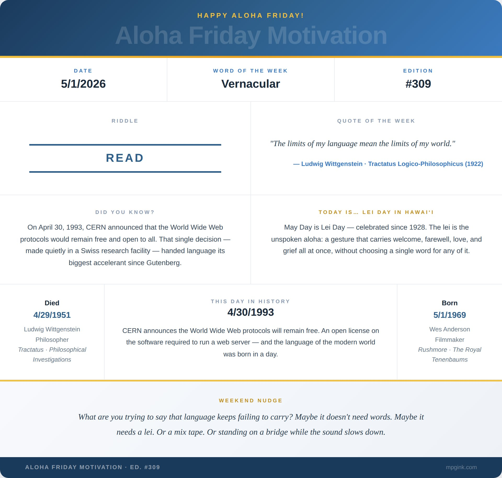

Happy Aloha Friday. 🌺
My youngest has a relationship with time that I find both maddening and quietly profound. Ask him about anything that happened in the past — three months ago, last Tuesday, yesterday morning — and the answer is the same: last night. Always last night. The word for then and the word for recent haven't separated yet in his mind. They're the same drawer. It used to frustrate me. Now I think he might be onto something.
My older son is building his vocabulary the way you'd build a fort — one plank at a time, testing each piece before he puts weight on it. We find rhymes together. We argue about slant rhymes. We make puns so bad they loop back around to good. The other day we were talking about something being familiar and he paused and said it sounded like from earlier. I didn't have a quick answer for that. He wasn't wrong.
A philosopher named Ludwig Wittgenstein spent his whole life on exactly that problem. He died this past Wednesday, April 29, 1951 — and I was first introduced to him sophomore year at Hartwick by Professor Adrian McFarland, in a class called Language, Meaning, and Truth.
Wittgenstein gave away his family fortune, volunteered for the Austrian army in WWI, and eventually became the most influential philosopher of the 20th century — twice, with two completely different philosophies. The first said language is a precise picture of reality, and anything it can't picture shouldn't be spoken at all. He ended the Tractatus Logico-Philosophicus with a single sentence that hits like a door closing: "Whereof one cannot speak, thereof one must be silent." Then he changed his mind entirely. The second Wittgenstein said meaning isn't fixed — meaning is use. It lives in the exchange, in the context, in who's speaking and who's listening and what world they happen to be standing in. The limits of language aren't walls. They're coastlines — always shifting, always being redrawn by whoever's standing at the edge.
His last words, spoken to his doctor's wife before losing consciousness: "Tell them I've had a wonderful life." The man who spent sixty years mapping what language can and cannot carry chose, at the end, seven words. And they were enough.
Someone else who understands that — maybe better than anyone alive — turns 57 today. Wes Anderson. I've loved his work since I found the Criterion Collection DVD of Rushmore and disappeared into it completely. Max Fisher. Dirk. Mr. Blume. Anderson builds worlds the way Wittgenstein built propositions — precise, controlled, every frame a deliberate choice. But what those worlds mean, why they hit you the way they do — that escapes the frame entirely. It shows itself. The Blume chapel speech. The double cigarette. The slow pan across Max's extracurricular bulletin board. "Take dead aim on the rich boys. Get them in the crosshairs and take them down. Just remember, they can buy anything but they can't buy backbone." That lands differently depending on who you were when you first heard it. That's not Anderson failing to fix the meaning. That's the coastline doing what coastlines do.
I know this because of a cassette player and a trestle bridge.
Hartwick College. Oneonta, New York. Some Saturday in 1999 — though my youngest would simply say it was last night. Don Robbo — Robb McNaugher, RobbsterMobbster in the old tongue — and I had wandered out to the back fields of the Pine Lake environmental campus. Acres of open space where the line between reality and everything else got pleasantly blurry. I had a cassette player, one of those rectangular relics with the flip-top lid and the row of keys at the bottom — play, stop, record — and a handle at the top like a lunchbox. I'd been making mix tapes in my dorm room: half-step Mississippi Uptown Toodeloo by the Dead bleeding into a Max Fisher monologue bleeding into Jeff Buckley bleeding into Will Hunting bleeding into Phish bleeding into Forest Whitaker in Ghost Dog.
We were dancing on the decaying wooden planks of the trestle bridge when the batteries started to die. Not stop — die. D batteries don't quit. They decay. And as they did, the tape slowed. A scene from Good Will Hunting — Will catching a Harvard student plagiarizing, completing the stolen sentence before the thief can finish it: "Wood drastically underestimates the impact of social distinctions predicated upon wealth, especially inherited wealth..." — stretched into something low and oceanic. The words pulling apart from each other like taffy, meaning warping at the edges. Time was distorting. Or language was. Hard to say where one ended and the other began.
To this day, Robb and I quote it that way. Drawn out. Slowed down. The batteries dying forever.
The moment language slows down enough that you can see the seams — that's where his whole life's work lives. Meaning isn't in the word. It's in the speed, the context, the listener, the field you're standing in, whether the batteries are fresh or failing.
My kids are growing up inside all of it, building their vocabularies in real time, making their own mix tapes of meaning. My youngest collapses all of the past into last night. My older one hears familiar and thinks from earlier. They're not wrong. They're just on their own trestle bridge, batteries at full charge, everything still at full speed.
Thanks for reading. Thanks for listening. See you next Friday.
Weekend Nudge: What are you trying to say that language keeps failing to carry? Maybe it doesn't need words. Maybe it needs a mix tape. Or standing on a bridge while the sound slows down.
Mahalo Nui. 🌺
— Matthew
